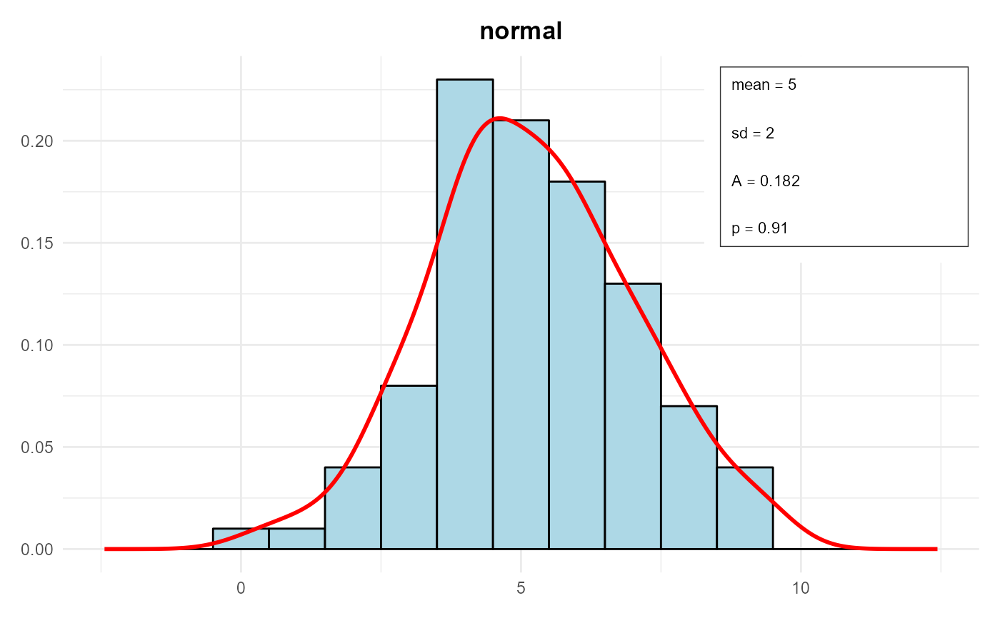
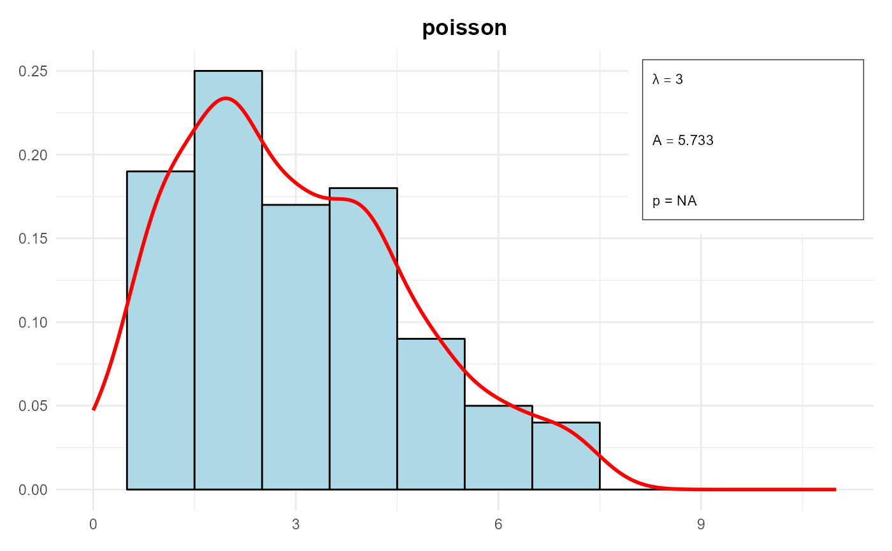
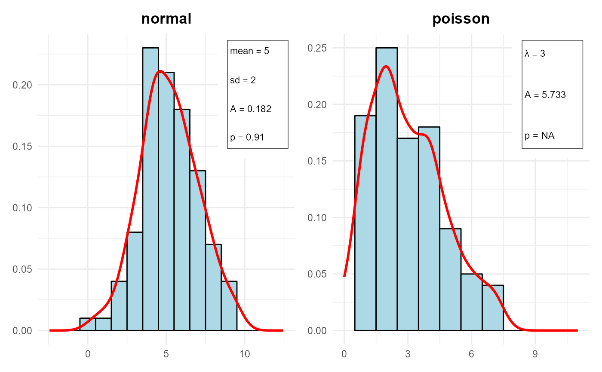

DistrCollection.RdR6 Class for Managing a Collection of Distribution Objects
distrList of Distr objects.
get()Get a Distr object from the collection by its index.
print()Print the summary of all distributions in the collection.
summary()Summarize the goodness of fit for all distributions in the collection.
plot()Plot all distributions in the collection.
DistrCollection$plot(
xlab = NULL,
ylab = NULL,
xlim = NULL,
ylim = NULL,
line.col = "red",
fill.col = "lightblue",
border.col = "black",
line.width = 1,
box = TRUE
)xlabCharacter string for the x-axis label.
ylabCharacter string for the y-axis label.
xlimNumeric vector specifying the x-axis limits.
ylimNumeric vector specifying the y-axis limits.
line.colCharacter string for the color of the plot line. Default is "red".
fill.colCharacter string for the color of the histogram fill. Default is "lightblue".
border.colCharacter string for the color of the histogram border. Default is "black".
line.widthNumeric value specifying the width of the plot line. Default is 1.
boxLogical value indicating whether to draw a box with the parameters in the plot. Default is TRUE.
set.seed(123)
data1 <- rnorm(100, mean = 5, sd = 2)
parameters1 <- list(mean = 5, sd = 2)
distr1 <- Distr$new(x = data1, name = "normal", parameters = parameters1, sd = 2, n = 100, loglik = -120)
data2 <- rpois(100, lambda = 3)
parameters2 <- list(lambda = 3)
distr2 <- Distr$new(x = data2, name = "poisson", parameters = parameters2, sd = sqrt(3), n = 100, loglik = -150)
collection <- DistrCollection$new()
collection$add(distr1)
collection$add(distr2)
collection$summary()
#>
#> ------ Fitted Distribution and estimated parameters ------
#>
#> fitted distribution is normal :
#> $mean
#> [1] 5
#>
#> $sd
#> [1] 2
#>
#>
#> fitted distribution is poisson :
#> $lambda
#> [1] 3
#>
#>
#>
#> ------ Goodness of Fit - Anderson Darling Test ------
#>
#> Distribution A p.value
#> 1 normal 0.182 0.9104
#> 2 poisson 5.733 NA
collection$plot()


